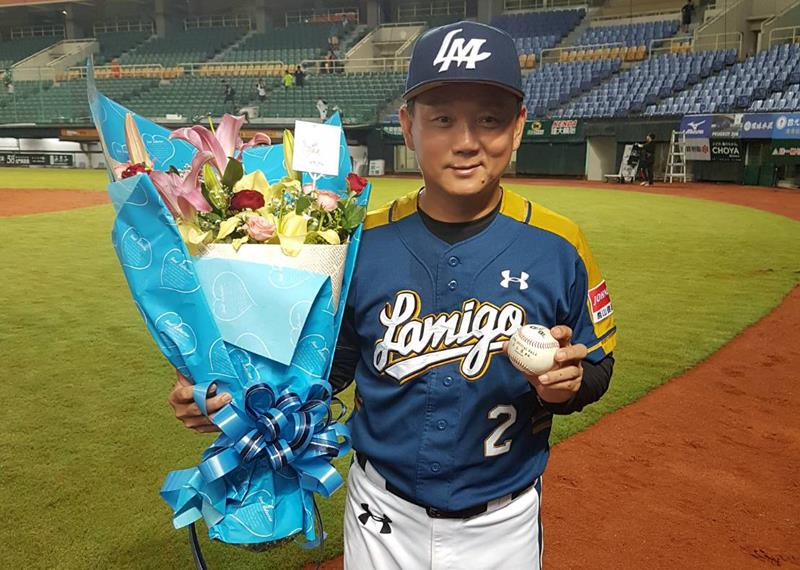

2009年因部分La New熊隊球員涉及黑象事件而轉任二軍總教練，
與時任該職的蔡榮宗互換。2010年重返一軍回任總教練一職，
原二軍總教練則由郭建霖回任。因投手調度屢遭批評，
但野手調度卻常「神來一筆」而評價兩極，
2012年、2014年、2015年皆順利在台灣大賽獲勝奪下年度總冠軍，
2017年再度奪下年度總冠軍，正式超越前統一總教練呂文生拿下四次總冠軍的紀錄，
是目前中職史上「執教生涯擁有最多冠軍戒」的總教練。
洪一中